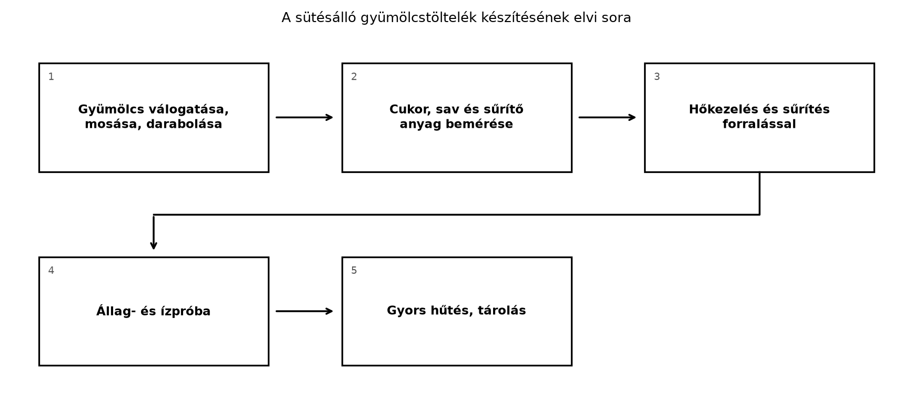

A beigli, a pozsonyi kifli vagy egy almás pite akkor lesz igazán jó, ha a töltelék nem folyik ki, nem szárad csomóssá, és a vágási felület egyenletes. A vendég azért tér vissza, mert a töltelék íze intenzív, állaga krémes vagy szálas, és a termék másnap is biztonságosan fogyasztható. A töltelék a sütemény lelke, de egyben a legérzékenyebb része is: magas nedvességtartalma, fehérje- és cukortartalma, valamint a hőkezelés utáni hűtési lánc együtt határozza meg a romlási kockázatot. Ebben a leckében a gyümölcs-, dió-, mák- és mogyorótöltelékeket a víztartalom és a sűrítés oldaláról tanuljuk meg. A tanultakat később a beigli és a pozsonyi kifli készítésénél használjuk fel.

A töltelék útja mindig ugyanaz: előkészítünk, koncentrálunk (vizet vonunk el vagy kötünk meg), beállítjuk az ízt, majd azonnal hűtjük. Ha bármelyik lépés kimarad, a töltelék híg, kifolyó vagy romlandó lesz.
Definíció. Töltelék a cukrászatban a tészták közé, azok üregeibe vagy felületére felvitt, ízesített, krémes vagy darabos, sütéssel vagy sütés nélkül felhasznált félkész termék.
Definíció. Sütésálló töltelék az a töltelék, amely sütés közben nem folyik ki, nem forr túl, és megtartja formáját. Sütésállóságát alacsony vízaktivitással, sűrítő anyaggal, megfelelő cukor- vagy zsiradéktartalommal, illetve előfőzéssel érjük el.
Definíció. A vízaktivitás () a termékben lévő szabad víz aránya. Minél alacsonyabb ez az érték, annál kevesebb víz áll a mikrobák rendelkezésére. A friss gyümölcs vízaktivitása 0,95 felett van; a sütésálló töltelékeké cukorral, főzéssel és vízelvonással 0,90 alá csökkenthető (ellenőrizendő: termékspecifikus vízaktivitás-határ). A vízaktivitás nem azonos a nedvességtartalommal: a cukor és a só megköti a vizet, ezért a mérhető nedvesség ellenére kevesebb hasznosítható víz marad.
Szabály. A töltelék víztartalmát három módon csökkentjük vagy kötjük meg: (1) párolással/főzéssel elpárologtatjuk, (2) cukorral, sóval vagy sűrítő anyaggal (keményítő, pektin) megkötjük, (3) zsiradékkal (dió, vaj, tejszín) vízben szegény masszát vagy emulziót alakítunk ki. A folyamat során a hőkezelés és a gyors hűtés a biztonság feltétele.
Jogszabály. A 852/2004/EK rendelet szerint a tejjel, tejszínnel, tojással készülő töltelékek hőkezelése, gyors lehűtése és hűtött tárolása higiéniai alapkövetelmény. Az 1169/2011/EU rendelet II. melléklete szerint a diófélék, a tej, a glutént tartalmazó gabonák és a 10 mg/kg (illetve 10 mg/l) feletti kén-dioxid/szulfit jelenlétét jelölni kell (ellenőrizendő: II. melléklet). A mák nem tartozik a 14 kötelezően jelölendő allergéncsoport közé, de mákallergia előfordul, ezért a vendég kérésére tájékoztatást adunk róla. Az adalékanyagként használt keményítő, pektin vagy szorbát csak a 1333/2008/EK rendelet szerint engedélyezett anyag lehet (ellenőrizendő: aktuális adalékanyag-táblázat). A lekvár- és dzsemszerű termékekre a Magyar Élelmiszerkönyv gyümölcskészítményekre vonatkozó összetételi előírásai vonatkoznak (ellenőrizendő: Magyar Élelmiszerkönyv vonatkozó fejezete).
A gyümölcsöt mindig válogassuk át: a penészes, erjedt, sérült szemeket dobjuk ki, mert a sütés nem méregteleníti a mikotoxinokat. Mossuk folyó víz alatt, csepegtessük le, majd daraboljuk a kívánt méretre. A vágott alma gyorsan barnul; a barnulást citromlével vagy hőkezeléssel gátolhatjuk. A gyümölcstartalmú töltelékeknél a cukor, a sav és a pektin aránya dönti el az állagot: a savas, pektinben gazdag gyümölcsökből (ribiszke, alma) sűrűbb gél lesz, az eperből és az őszibarackból hígabb, ezért oda pektin vagy keményítő kell.
A párolt alma a piték, rétesek és almás sütemények klasszikus tölteléke. Az almát hámozzuk meg, távolítsuk el a magházát, majd vágjuk kockára vagy szeletre.
Recept. Párolt alma töltelék kb. 1 kg-hoz.
Higiénia. A párolt alma 4 °C felett néhány óra alatt erjedni kezdhet. Csak annyit főzzünk, amennyit aznap vagy másnap felhasználunk, vagy gyorshűtés után mélyhűtve tároljunk.
A meggy, a cseresznye és az erdei gyümölcsök savas közege kedvez a pektinnek, de a bogyós gyümölcsök pektintartalma változó. A tölteléket leggyakrabban étkezési keményítővel vagy főzős pektinnel sűrítjük.
Meggytöltelék vázlata 1 kg-hoz (tanulási recept):
A művelet: a gyümölcsöt a cukor felével és a vízzel felforraljuk. A keményítőt hideg vízzel csomómentesre keverjük, a forrásban lévő gyümölcshöz adjuk, és 1–2 percig forraljuk. Levesszük a tűzről, hozzáadjuk a maradék cukrot, és hűtjük. A rövid forralás nem csirízesíti el teljesen a keményítőt, de a sütő hőmérséklete befejezi; ha a tölteléket hidegen használjuk, akkor legalább 2–3 percig forralni kell.
A lekvár vagy dzsem alapú töltelék kényelmes, de önmagában kevésbé sütésálló, mert a magas gyümölcscukor-tartalom a sütőben karamellizálódhat, és a töltelék kifolyhat. Csak magas szárazanyag-tartalmú, jól zselésedő készítményt válasszunk. A dzsemet gyakran keverjük kevés párolt almával vagy keményítővel, hogy sütés közben ne folyjon ki.
A dió, a mák és a mogyoró avasodásra, penészesedésre hajlamos. A penészes tételt vissza kell utasítani, mert a mikotoxinok nem bomlanak el sütés közben. A diót és a mogyorót szárazon, 150–170 °C-on 5–10 percig piríthatjuk, de vigyázzunk, hogy ne égjen meg (ellenőrizendő: üzemi pirítási gyakorlat). A pirítás erősíti az aromát. A mákot nem pirítjuk, hanem forrázzuk vagy főzzük.
A magvakat csak annyit daráljuk, amennyit azonnal felhasználunk, mert a megnövekedett felület és a sérült sejtekből kiszabaduló olaj gyorsítja az avasodást. A mákot finomra daráljuk; a diót és a mogyorót a termék jellegétől függően darálva vagy durvára vágva adjuk a töltelékhez.
A forrázás azt jelenti, hogy a darált magvat forró cukros tejjel vagy sziruppal öntjük le. A forrázás kioldja a magvak aromáját, részben lágyítja a fehérjéket, és csökkenti a nyers ízt. A klasszikus beigli- és pozsonyitöltelék forrázott dióval készül.
Arányok 1 kg forrázott diótöltelékhez (tanulási recept):
A tejet a cukorral felforraljuk, a diót és a mazsolát leforrázzuk, hozzáadjuk a fűszereket, átkeverjük, majd kihűtjük. A kihűlt masszát hidegen vagy enyhén kézmelegen töltsük a tésztába.
A mák több nedvességet vesz fel, mint a dió, ezért főzni szoktuk. A mákot tejben, cukorral, citromhéjjal és vaníliával addig főzzük, amíg a massza kenhető, de nem folyós. Gyakran darált keksszel, búzadarával vagy zsemlemorzsával stabilizáljuk. A búzadara és a zsemlemorzsa glutént tartalmaz, ezért gluténmentes termékhez ne használjuk, vagy jelöljük.
Máktöltelék vázlata kb. 850 g-hoz (tanulási recept; az összes tömeg a tételek közepes értékeivel kb. 860 g):
Allergének. Glutén (búzadara, zsemlemorzsa), tej (tej, vaj); a keresztszennyezés miatt nyomokban más diófélék is előfordulhatnak (a mák nem tartozik az 1169/2011/EU szerinti 14 csoportba).
A tejet a cukorral és a búzadarával sűrűre főzzük, hozzáadjuk a mákot, a vajat, a citromhéjat, és addig keverjük, amíg a massza besűrűsödik. A mák forrázva is készülhet, de a főzés csökkenti a mikrobiológiai kockázatot, és a töltelék stabilabb lesz.
A mogyorót pirítjuk, a héját ledörzsöljük, majd a dióhoz hasonlóan forrázott masszát készítünk. A mogyoró zsírtartalma magas, ezért kevesebb folyadék kell, és a cukor mellett kakaóporral, étcsokoládéval is ízesíthetjük. A mogyoró dióféle, a földimogyoró hüvelyes; mindkettő allergén, ezért a jelölést és a keresztszennyezést külön kell kezelni.
A sütésállóság kulcsa a víz megkötése és a töltelék viszkozitása. A következő műveletek segítenek:
Tilos. A krémes, tejes, tojásos tölteléket órákig melegen tartani; a diós-mákos tölteléket szobahőmérsékleten tárolni; a lejárt vagy penészes magvat „megpirítva megmenteni”.
1. példa. Diótöltelék nagyítása beiglihez. Alaprecept 1 kg-hoz: dió 500 g, cukor 200 g, tej 200 ml, mazsola 80 g, citromhéj 5 g, fahéj 2 g, összesen 987 g. Egy üzemi napon 12 db beigli készül, mindegyikbe 400 g töltelék kell. Mennyi diót és tejet mérjünk be?
Adott: 1 kg-os recept, szükséges tömeg . A szorzószám:
A dió bemérése: . A tej bemérése: (a tej sűrűségét 1 g/ml-nek véve). Ellenőrzés: az összesített tömeg , ami a kívánt 4 800 g-hoz közelít; a kerekítés miatt csekély az eltérés. A tizedes tömeget gyakorlati pontossággal 2 430 g-ra, a tejet 970 ml-re kerekítjük.
2. példa. Keményítő adagolása híg meggytöltelékhez. Van 2 kg meggytöltelék, amely főzés után még híg. A kívánt állaghoz a kész töltelék tömegére számítva 4 tömegszázalék étkezési keményítő kell. Mennyi keményítőt adjunk hozzá, ha a meglévő töltelék már 1,5% keményítőt tartalmaz, és a keményítőt 1:4 arányban hideg vízzel keverjük el?
Adott: , jelenlegi keményítő , cél a kész töltelék tömegére. A már benne lévő keményítő:
A hozzáadandó keményítő gramm, hozzá gramm hideg víz (1:4), így a kész töltelék tömege :
A keményítőt előbb a hideg vízben elkeverjük, a forrásban lévő töltelékhez adjuk, és 2–3 percig forraljuk. Ellenőrzés: kész töltelék ; keményítő ; . (A hozzáadott víz miatt az eredetileg számolt 50 g keményítő csak -ot adna, ezért kell több.)
Cél. Tanuld meg 1 kg sütésálló forrázott diótölteléket készíteni, amely beiglihez, pozsonyi kiflihez és uzsonnasüteményhez használható.
Eszközök és anyagok. Vastag aljú lábas, kézi habverő vagy fakanál, mérleg, hőmérő, hűtőedény, fólia, daráló vagy aprítógép, tiszta tárolóedény. A dió, tej, cukor, mazsola, citromhéj és fahéj friss és ellenőrzött legyen.
Higiéniai munkakezdés. Munkaruha, hajháló, ékszer le, kézmosás. A felületeket és az eszközöket tisztítsuk meg. A daráló és az aprítógép tisztítása előtt áramtalanítsunk, és győződjünk meg arról, hogy a gép áll. A diót és a mazsolát ellenőrizzük: ne legyen avas, dohos, penészes szaga.
Biztonsági korlát. A forró cukros tej súlyos forrázást okozhat. Az edényt stabilan helyezzük el, hosszú nyelű eszközzel keverjünk, és soha ne hajoljunk a forró gőz fölé. A daráló gép védőburkolatát nem szabad kiiktatni; a gépet csak oktatás után és felügyelet mellett használjuk.
Technológiai lap. Sütésálló forrázott diótöltelék, kb. 1 kg.
| Nyersanyag | Mennyiség (g) | Megjegyzés |
|---|---|---|
| Darált dió | 500 | frissen darálva |
| Kristálycukor | 200 | |
| Tej | 200 | 2,8% zsírtartalmú |
| Mazsola | 80 | beáztatva, lecsepegtetve |
| Reszelt citromhéj | 5 | kezeletlen héjról |
| Őrölt fahéj | 2 | |
| Összesen | 987 | kb. 1 kg kész töltelék |
A táblázat nettó tömegre vonatkozik; a bemérésnél a veszteség miatt 5–10% ráhagyás javasolt.
Műveleti sorrend.
Kritikus pontok. A dió beszerzésekor a mikotoxin-kockázatot a szállítótól kért specifikációval és érzékszervi vizsgálattal ellenőrizzük. A forrázás forrásban lévő tejjel történik; ha a tej nem elég forró, a töltelék nyers maradhat. A hűtés kritikus: a hőkezelt tölteléket 2 órán belül 4 °C alá hűtjük (tanulási példa; a hűtési időre és hőfokra nincs egyetlen, általánosan kötelező számérték, azt az üzemi HACCP-terv rögzíti – ellenőrizendő: hatályos GHP-útmutató). Ha a hűtés lassú, a túlélő spórásodók felszaporodhatnak.
Allergének. Diófélék, tej, glutén (ha zsemlemorzsát használunk), szulfit (kénezett mazsola esetén), valamint nyomokban földimogyoró vagy más diófélék a keresztszennyezés miatt, ha a daráló közös vonalon dolgozik.
Minőségi jellemzők. A töltelék egynemű, kenhető, nem folyós; a dió apró darabokban felismerhető. Íze édes, diós, fűszeres, nem keserű. Tárolás 5 °C alatt, legfeljebb 48 óra (ellenőrizendő); a felhasználás előtt hidegen adagoljuk a tésztába.
A töltelékek minőségét érzékszervi vizsgálattal és egyszerű fizikai próbával ellenőrizzük. A gyümölcstöltelék legyen fényes, darabos vagy homogén, kenhető, ne legyen csomós. A dió- és máktöltelék legyen egynemű, a zsiradék ne váljon ki. A sütésálló tölteléket próbaként kenjük kisebb tésztadarabra, és süssük meg: ha a töltelék kifut, további sűrítés vagy hűtés szükséges.
Egy cukrászüzemben december 20-án a karácsonyi megrendelésre 120 db beiglit készítenek. A diótölteléket előző nap készítik el, de az egyik tanuló elfelejti a hűtőbe tenni, és a töltelék reggelig szobahőmérsékleten marad. A vezető érzékszervi ellenőrzést végez: a massza kissé savanykás szagú, a felülete nyálkás. A tölteléket azonnal selejtezi, mert a romlás jelei már érzékelhetők, és a sütés a keletkezett toxinokat nem távolítaná el. A tanulság: a hűtési lánc megszakítása nem javítható, és a vendég egészsége mindennél előbbre való.
Önellenőrzés – válaszok:
1. feladat (A). Definiáld a sütésálló tölteléket, és sorold fel három fő elvét.
2. feladat (A). Számítsd ki, mennyi dió, cukor és tej kell 3 kg forrázott diótöltelékhez, ha a tanulási arány 0,9 kg kész töltelékhez: dió 500 g, cukor 200 g, tej 200 g.
3. feladat (B). Van 1,8 kg párolt alma, amelyhez 3,5% étkezési keményítőt kell adni a kívánt állaghoz. Mennyi keményítőt mérj be? A keményítőt 1:4 arányban hideg vízzel kevered; mennyi vizet használj fel?
4. feladat (B). A meggytöltelék receptje 1 kg-hoz: meggy 700 g, cukor 200 g, keményítő 30 g, víz 100 ml. Egy nagyméretű réteshez 350 g töltelék kell. Mennyi meggyet, cukrot és keményítőt mérj 12 réteshez?
5. feladat (C). Leveles pitébe sütésálló almás-mákos tölteléket kell készíteni. A mák felszívja a vizet, az alma párolás közben levet enged. Milyen sorrendben készítenéd el a tölteléket, és mivel sűrítenéd, hogy ne legyen kifolyó? Indokold.
6. feladat (D). Készítsd el a gyakorlati útmutató szerinti sütésálló forrázott diótölteléket 0,5 kg-os mennyiségben. Tölts ki technológiai lapot, mérj tömegveszteséget, és értékeld érzékszervi szempontok szerint.
1. feladat. Sütésálló töltelék: olyan töltelék, amely sütés közben nem folyik ki, nem forr túl, és megtartja formáját. Elv: alacsony vízaktivitás, sűrítő anyag, előfőzés/hűtés.
2. feladat. A szorzó . Dió: ; cukor: ; tej: . Ellenőrzés: g.
3. feladat. Keményítő: ; víz: . Ellenőrzés: a hozzáadott keverék 315 g, az össztömeg nő, a keményítőszázalék kissé csökken, de a gyakorlati tűrésbe belefér.
4. feladat. Szükséges töltelék: . A szorzó: . Meggy: ; cukor: ; keményítő: ; víz: . Ellenőrzés: az összeg g.
5. feladat. Sorrend: először az almát kis lángon pároljuk, hogy a leve nagyrészt elpárologjon. A keményítőt hideg vízben oldjuk, az almához adjuk, és 1–2 percig forraljuk, hogy sűrű legyen. A mákot külön tejben vagy cukros lében főzzük be, vagy forrázzuk le; a két komponenst csak a legvégén keverjük össze, hogy a keményítő ne híguljon fel a mák által felvett folyadékban. A végső masszának nem szabad folynia, és hűtve kell a tésztába tölteni.
6. feladat. A tanuló a 0,5 kg-os receptet a szorzó 0,5 alkalmazásával pontosan beméri; a műveleti sorrendet betartja; a hűtést elvégzi; a technológiai lapot kitölti (termék neve, alapmennyiség, anyaghányad, eszközök, művelet, CCP, allergének, tömegellenőrzés); a veszteséget leméri (pl. az edényben maradt anyag); érzékszervi értékelése kitér a színre, állagra, ízre és kenhetőségre.
A gyümölcs- és olajos magvas töltelékek minősége a víztartalom és a sűrítés egyensúlyán áll. A gyümölcstölteléket párolással koncentráljuk, keményítővel vagy pektinnel sűrítjük, a lekvár/dzsem alapnál a pektin–sav–cukor gélt használjuk. A dió-, mák- és mogyorótöltelék a magvak darálása után forrázással vagy főzéssel készül; a dió forrázott, a mák főzött változatban stabil. A sütésálló töltelék feltétele az alacsony vízaktivitás, a sűrítő anyag, az előfőzés és a gyors hűtés. A kész tölteléket 5 °C alatt, a technológiai lap szerint legfeljebb 48 óráig tároljuk (ellenőrizendő: üzemi HACCP-terv), és a kritikus pontokon (hőkezelés, hűtés) ellenőrizzük. A diófélék, a tej, a glutént tartalmazó gabonák és a szulfit (10 mg/kg felett) jelölendő allergének (a mák nem tartozik a 14 csoportba, de mákallergia előfordul); a penészes, avas magvas tételt selejtezni kell. Továbbvitt eredmény. Ezt a forrázott diós és főzött mákos tölteléket használjuk a Omlós élesztős uzsonnasütemények: pozsonyi kifli, beigli, pogácsák alfejezetben, és az Az uzsonnasütemények jellemzői és műveletei alfejezetben.